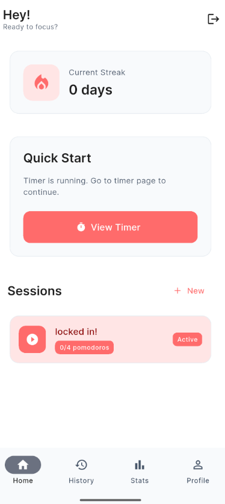

Master Your Focus,
Achieve Flow State
The ultimate Pomodoro timer designed for deep work and maximum productivity. Break free from distractions, track your progress, and build lasting focus habits with science-backed time management.

